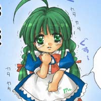

Which Ostan are you?

You are Windows Milennium Edition, sometimes known as Miserable Edition. You're a complete spaz, and you know it, but somehow your cuteness and good nature have made you the most popular OS tan.
Copy and paste the following code onto your livejournal!